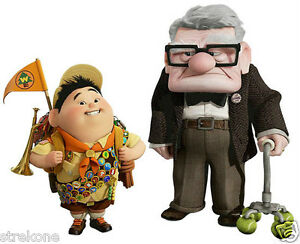
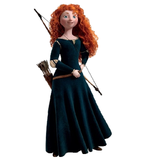

Também conhecida como Pixar Animation Studio, é uma empresa de animção digital norte-americana pertencente à The
Walt Disney Company. É especializada em alta tecnologia de computação gráfica.
Toy Story: É conhecido por ser o primeiro longa-metragem dos estúdios Pixar e também o primeiro da história
do cinema totalmente feito por computação gráfica.
2001
Monstro S.A: O filme conta a história sobre monstros que assustam crianças para conseguir seus gritos e
gerar energia para seu mundo.
2003
Procurando Nemo: Vencedor do Oscar de Melhor Filme de Animação apresenta um mundo onde peixes e outros seres
marinhos vivem numa sociedade semelhante à de seres humanos.
2004
Os Incríveis: Foi indicado a 4 Oscars, e venceu 2. Melhor Filme de Animação e Melhor Edição de Som. Conta a
hsitória de Beto e Helena Pera, seres humanos dotados de super poderes, que se casaram e agora têm três
filhos: Violeta, Flecha e o bebê Zezé, na cidade de Metroville.
2007*
Ratatouille: Conta a história de Rémy, um rato vivendo em Paris que sonha em se tornar um chef de cozinha.
Grupo de Pesquisa Pixar
O Grupo de Pesquisa Pixar foi criada em 2004 com o proposito de:
Desenvolver tecnologias
Promover a inovação
Fornecer consultoria
Participar de comunidades de pesquisas externas
Alguns Filmes de Curta-Metragem da Pixar
Lou
Piper
Day & Night
Air Mater
Party Central
Galerias
Vídeos
Áudios
Carros 2:
Divertida Mente
Imagens
WALL-E: Conta a história de um robô chamado WALL-E, criado no ano de 2100 para limpar a Terra
coberta por lixo.

Up: Conta as aventuras que Carl (um idoso viúvo com seu sonho de se mudar para seu magnífico Paraíso
das Cachoeiras na Venezuela) enfrenta ao conhecer Russel (um garoto escoteiro amante da natureza com seu
sonho de protegê-la), Muntz (o explorador difamado buscando restabelecer sua reputação), Kevin (a ave
tropical) e Dug (um golden retriver falante).

VALENTE: Merida é uma habilidosa arqueira e a impetuosa filha do Rei Fergus e da Rainha Elinor.
Determinada a trilhar o seu próprio destino, Merida desafia um costume ancestral, se negando a casar com o
primogênito de um dos quatro clâs.